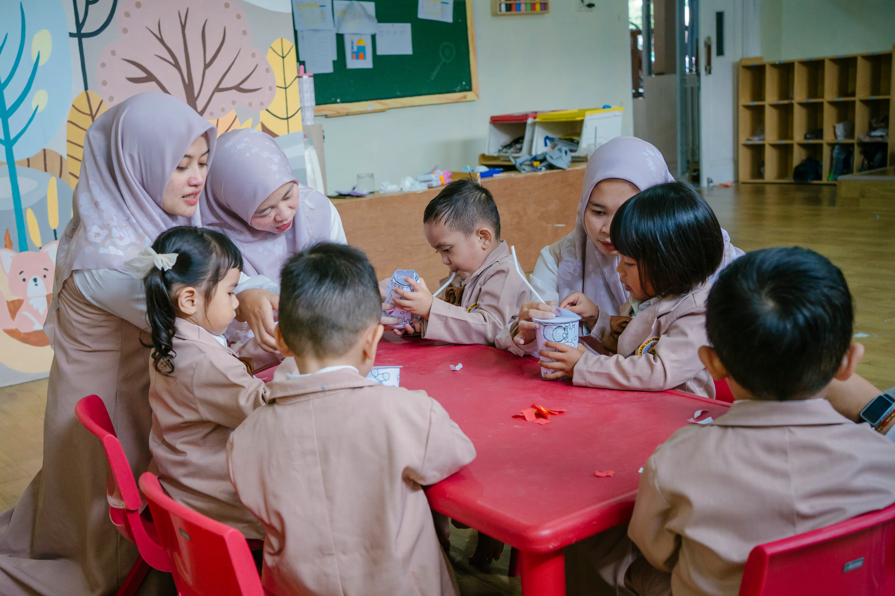

Kelas An-Najma – Program pengenalan belajar yang aman, nyaman, dan menyenangkan untuk si kecil usia 2–3 tahun
Toddler Class adalah program untuk anak usia 2–3 tahun yang dirancang dengan pendekatan Islamic Montessori. Di sini si kecil diperkenalkan dengan lingkungan belajar yang hangat dan penuh kasih sayang.
Dengan kuota hanya 8 siswa, setiap anak mendapatkan perhatian personal yang memaksimalkan tumbuh kembangnya sesuai fitrah dan potensinya.

Mewujudkan insan bertaqwa, berakhlak mulia, sehat, cerdas, kreatif dan mandiri
Toddler Class menggunakan 6 area Montessori yang disesuaikan untuk anak usia 2–3 tahun
Kemandirian dasar: minum sendiri, makan sendiri, memakai sepatu
Stimulasi indra melalui material tekstur, warna, dan bentuk sederhana
Pengenalan kosakata bahasa Indonesia, Arab, dan Inggris dasar
Pengenalan konsep banyak-sedikit, besar-kecil, dan angka 1–10
Mengenal lingkungan sekitar, hewan, tumbuhan, dan alam
Doa harian, surat pendek, dan pengenalan nilai-nilai Islam dasar
Toddler Class didampingi tim pengajar lengkap untuk memastikan si kecil selalu terjaga dan berkembang optimal
Memimpin kegiatan belajar dan bertanggung jawab atas perkembangan menyeluruh setiap anak
Memimpin kegiatan belajar dan bertanggung jawab atas perkembangan menyeluruh setiap anak
Mendampingi dan memberikan perhatian individual kepada setiap anak selama kegiatan berlangsung
Mendampingi dan memberikan perhatian individual kepada setiap anak selama kegiatan berlangsung
Kuota hanya 8 siswa! Segera hubungi kami sebelum penuh.
📝 Daftar Sekarang 💬 Tanya via WA